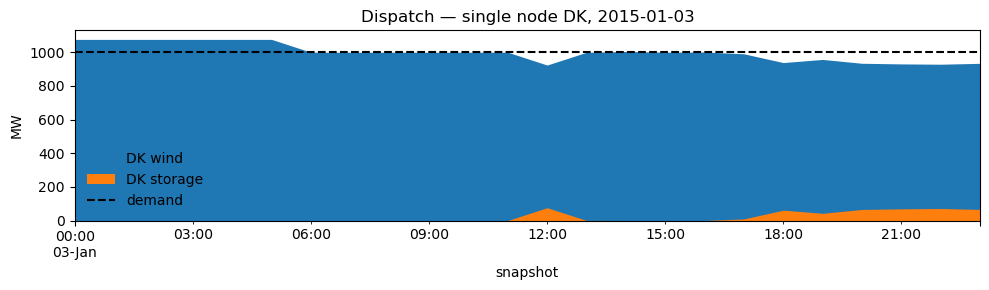
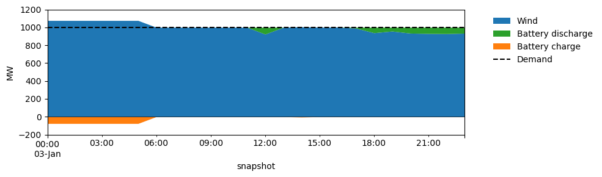
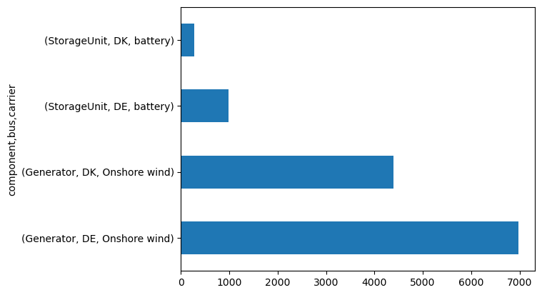

PyPSA Tutorial#
This tutorial connects the optimisation problems we introduced in Lectures 3 and 4 to PyPSA — Python for Power System Analysis. This tutorial covers some basic concepts of PyPSA, and accompanies the more hands-on introduction in the introduction to PyPSA notebook.
1. Dispatch + Capacity Expansion: Revisiting lecture 3#
The core optimisation problem (single node, joint dispatch and capacity expansion) is


(and further constraints: storage consistency, line limits, etc.)
Each part maps directly to a PyPSA concept:
Math |
Meaning |
PyPSA |
|---|---|---|
\(t\) |
Each time step (hour) |
Snapshot |
one node |
System node / representation |
Bus |
\(d_t\) |
Electricity demand |
Load |
\(g_{s,t}\) |
Generator dispatch |
Generator (result: |
Remaining important ingredients:
Math |
Meaning |
PyPSA |
|---|---|---|
\(G_s\) |
Installed capacity |
|
\(g_{s,t}\) |
Capacity factor (wind/solar) |
|
\(c_s\) |
Marginal cost |
|
\(C_s\) |
Investment cost |
|
Energy balance |
Demand = Supply |
Built into Bus automatically |
Generation limits |
Upper bound on dispatch |
Built into Generator automatically |
2. Single-Node Drawing → PyPSA Components#
Consider a single-node representation of Denmark (DK) with three components:

Each physical element maps to a PyPSA component:
Drawing symbol |
ESM concept |
PyPSA component |
Notes |
|---|---|---|---|
Circle |
Variable generator (wind/solar) |
|
|
Box |
Storage |
|
Use |
Triangle \(d_t\) |
Demand (load) |
|
|
The bus (Bus) is the node itself — it enforces the energy balance for everything attached to it.
We want to construct the single-node representation of Denmark in PyPSA, with a wind generator, a battery, and a load. Usually we would start with an empty network and add components one by one, but for “simple” networks there is a nice visual tool that can help us in this:
https://nimabahrami.github.io/pypsa-drawer/
We need to create the following components:
carriers for AC (for load), wind, and storage
a bus for DK
a load for DK
a generator for DK (wind)
a storage unit for DK (battery)
We will do this for one day (24 hours), and we will use the real wind capacity factors for Denmark on 2015-01-01 (24 hours) that we introduced in Lecture 3.
import pypsa
import pandas as pd
import matplotlib.pyplot as plt
# --- Real wind capacity factors: Denmark, 2015-01-03 (24 hours) ---
wind = pd.read_csv("Problems/data/onshore_wind.csv", sep=";", index_col=0, parse_dates=True)
wind = wind.tz_convert(None)
wind_dnk = wind.loc["2015-01-03", "DNK"]
print("DNK wind capacity factors on 2015-01-03:")
wind_dnk.plot()
DNK wind capacity factors on 2015-01-03:
<Axes: xlabel='utc_time'>

import pypsa
import numpy as np
# Create network
n = pypsa.Network()
n.set_snapshots(range(24)) # Adjust as needed
# --- Carriers ---
n.add(
"Carrier",
"Wind",
co2_emissions=0,
nice_name="Onshore wind",
color="0000FF",
)
n.add(
"Carrier",
"AC",
co2_emissions=0,
)
n.add(
"Carrier",
"battery",
co2_emissions=0,
)
# --- Buses ---
n.add(
"Bus",
"DK",
carrier="AC",
)
# --- Generators ---
n.add(
"Generator",
"DK wind",
bus="DK",
carrier="Wind",
p_nom=0,
p_set=0,
marginal_cost=0,
capital_cost=101644,
)
# --- Loads ---
n.add(
"Load",
"DK load",
bus="DK",
carrier="AC",
p_set=1000,
)
# --- Storage Units ---
n.add(
"StorageUnit",
"DK storage",
bus="DK",
carrier="battery",
p_nom=0,
max_hours=6,
capital_cost=102042,
marginal_cost=0,
)
# --- Solve ---
# n.optimize(solver_name="highs") # Uncomment to solve
# n.statistics() # View results
We can inspect the network to see what we added:
n
PyPSA Network 'Unnamed Network'
-------------------------------
Components:
- Bus: 1
- Carrier: 3
- Generator: 1
- Load: 1
- StorageUnit: 1
Snapshots: 24
We can check which generators we have, its name, its bus and carrier, its current capacity (p_nom), its capacity factors (p_max_pu), its capital and marginal costs (and other parameters):
n.generators[["bus", "carrier", "p_nom", "p_max_pu", "capital_cost", "marginal_cost"]]
| bus | carrier | p_nom | p_max_pu | capital_cost | marginal_cost | |
|---|---|---|---|---|---|---|
| name | ||||||
| DK wind | DK | Wind | 0.0 | 1.0 | 101644.0 | 0.0 |
At this point, we want to add the capacity factors from before, so we will actually regenerate the network similarly, but including snapshots and time series data:
import pypsa
import numpy as np
# Create network
n = pypsa.Network()
n.set_snapshots(wind_dnk.index) # NOTE THE DIFFERENCE
# --- Carriers ---
n.add(
"Carrier",
"Wind",
co2_emissions=0,
nice_name="Onshore wind",
color="0000FF",
)
n.add(
"Carrier",
"AC",
co2_emissions=0,
)
n.add(
"Carrier",
"battery",
co2_emissions=0,
color ="FF0000",
)
# --- Buses ---
n.add(
"Bus",
"DK",
carrier="AC",
)
# --- Generators ---
n.add(
"Generator",
"DK wind",
bus="DK",
carrier="Wind",
p_nom=0,
p_set=0,
marginal_cost=0,
capital_cost=101644,
p_max_pu=wind_dnk.values, # NOTE THE DIFFERENCE
p_nom_extendable=True, # Allow capacity expansion
)
# --- Loads ---
n.add(
"Load",
"DK load",
bus="DK",
p_set=pd.Series(1000, index=wind_dnk.index), # NOTE THE DIFFERENCE
)
# --- Storage Units ---
n.add(
"StorageUnit",
"DK storage",
bus="DK",
carrier="battery",
p_nom=0,
max_hours=6,
capital_cost=102042,
marginal_cost=0,
p_nom_extendable=True, # Allow capacity expansion
)
n.generators[["bus", "carrier", "p_nom", "p_max_pu", "capital_cost", "marginal_cost"]]
| bus | carrier | p_nom | p_max_pu | capital_cost | marginal_cost | |
|---|---|---|---|---|---|---|
| name | ||||||
| DK wind | DK | Wind | 0.0 | 1.0 | 101644.0 | 0.0 |
We can now check whether the capacity factors were added correctly:
n.generators_t.p_max_pu
| name | DK wind |
|---|---|
| snapshot | |
| 2015-01-03 00:00:00 | 0.775336 |
| 2015-01-03 01:00:00 | 0.784170 |
| 2015-01-03 02:00:00 | 0.757938 |
| 2015-01-03 03:00:00 | 0.740065 |
| 2015-01-03 04:00:00 | 0.711429 |
| 2015-01-03 05:00:00 | 0.679621 |
| 2015-01-03 06:00:00 | 0.612471 |
| 2015-01-03 07:00:00 | 0.578539 |
| 2015-01-03 08:00:00 | 0.560825 |
| 2015-01-03 09:00:00 | 0.554192 |
| 2015-01-03 10:00:00 | 0.556877 |
| 2015-01-03 11:00:00 | 0.567621 |
| 2015-01-03 12:00:00 | 0.498158 |
| 2015-01-03 13:00:00 | 0.538912 |
| 2015-01-03 14:00:00 | 0.541701 |
| 2015-01-03 15:00:00 | 0.539283 |
| 2015-01-03 16:00:00 | 0.539980 |
| 2015-01-03 17:00:00 | 0.534161 |
| 2015-01-03 18:00:00 | 0.506076 |
| 2015-01-03 19:00:00 | 0.516142 |
| 2015-01-03 20:00:00 | 0.503830 |
| 2015-01-03 21:00:00 | 0.501798 |
| 2015-01-03 22:00:00 | 0.500812 |
| 2015-01-03 23:00:00 | 0.503667 |
Same for the load:
n.loads_t.p_set
| name | DK load |
|---|---|
| snapshot | |
| 2015-01-03 00:00:00 | 1000.0 |
| 2015-01-03 01:00:00 | 1000.0 |
| 2015-01-03 02:00:00 | 1000.0 |
| 2015-01-03 03:00:00 | 1000.0 |
| 2015-01-03 04:00:00 | 1000.0 |
| 2015-01-03 05:00:00 | 1000.0 |
| 2015-01-03 06:00:00 | 1000.0 |
| 2015-01-03 07:00:00 | 1000.0 |
| 2015-01-03 08:00:00 | 1000.0 |
| 2015-01-03 09:00:00 | 1000.0 |
| 2015-01-03 10:00:00 | 1000.0 |
| 2015-01-03 11:00:00 | 1000.0 |
| 2015-01-03 12:00:00 | 1000.0 |
| 2015-01-03 13:00:00 | 1000.0 |
| 2015-01-03 14:00:00 | 1000.0 |
| 2015-01-03 15:00:00 | 1000.0 |
| 2015-01-03 16:00:00 | 1000.0 |
| 2015-01-03 17:00:00 | 1000.0 |
| 2015-01-03 18:00:00 | 1000.0 |
| 2015-01-03 19:00:00 | 1000.0 |
| 2015-01-03 20:00:00 | 1000.0 |
| 2015-01-03 21:00:00 | 1000.0 |
| 2015-01-03 22:00:00 | 1000.0 |
| 2015-01-03 23:00:00 | 1000.0 |
n.storage_units_t.p
| name | DK storage |
|---|---|
| snapshot | |
| 2015-01-03 00:00:00 | -76.222690 |
| 2015-01-03 01:00:00 | -76.222690 |
| 2015-01-03 02:00:00 | -76.222690 |
| 2015-01-03 03:00:00 | -76.222690 |
| 2015-01-03 04:00:00 | -76.222690 |
| 2015-01-03 05:00:00 | -76.222690 |
| 2015-01-03 06:00:00 | 0.000000 |
| 2015-01-03 07:00:00 | 0.000000 |
| 2015-01-03 08:00:00 | 0.000000 |
| 2015-01-03 09:00:00 | 0.000000 |
| 2015-01-03 10:00:00 | 0.000000 |
| 2015-01-03 11:00:00 | 0.000000 |
| 2015-01-03 12:00:00 | 76.222690 |
| 2015-01-03 13:00:00 | 0.649035 |
| 2015-01-03 14:00:00 | -4.522848 |
| 2015-01-03 15:00:00 | -0.038942 |
| 2015-01-03 16:00:00 | -1.331449 |
| 2015-01-03 17:00:00 | 9.459224 |
| 2015-01-03 18:00:00 | 61.539660 |
| 2015-01-03 19:00:00 | 42.873408 |
| 2015-01-03 20:00:00 | 65.704611 |
| 2015-01-03 21:00:00 | 69.472724 |
| 2015-01-03 22:00:00 | 71.301149 |
| 2015-01-03 23:00:00 | 66.006876 |
n.optimize(solver_name="gurobi") # Solve
INFO:linopy.model: Solve problem using Gurobi solver
INFO:linopy.io: Writing time: 0.04s
Set parameter Username
INFO:gurobipy:Set parameter Username
Set parameter LicenseID to value 2767832
INFO:gurobipy:Set parameter LicenseID to value 2767832
Academic license - for non-commercial use only - expires 2027-01-20
INFO:gurobipy:Academic license - for non-commercial use only - expires 2027-01-20
Read LP format model from file /private/var/folders/zg/by4_k0616s98pw41wld9475c0000gp/T/linopy-problem-hre43m7v.lp
INFO:gurobipy:Read LP format model from file /private/var/folders/zg/by4_k0616s98pw41wld9475c0000gp/T/linopy-problem-hre43m7v.lp
Reading time = 0.00 seconds
INFO:gurobipy:Reading time = 0.00 seconds
obj: 242 rows, 98 columns, 457 nonzeros
INFO:gurobipy:obj: 242 rows, 98 columns, 457 nonzeros
Gurobi Optimizer version 13.0.0 build v13.0.0rc1 (mac64[arm] - Darwin 25.2.0 25C56)
INFO:gurobipy:Gurobi Optimizer version 13.0.0 build v13.0.0rc1 (mac64[arm] - Darwin 25.2.0 25C56)
INFO:gurobipy:
CPU model: Apple M3
INFO:gurobipy:CPU model: Apple M3
Thread count: 8 physical cores, 8 logical processors, using up to 8 threads
INFO:gurobipy:Thread count: 8 physical cores, 8 logical processors, using up to 8 threads
INFO:gurobipy:
Optimize a model with 242 rows, 98 columns and 457 nonzeros (Min)
INFO:gurobipy:Optimize a model with 242 rows, 98 columns and 457 nonzeros (Min)
Model fingerprint: 0x689c9207
INFO:gurobipy:Model fingerprint: 0x689c9207
Model has 2 linear objective coefficients
INFO:gurobipy:Model has 2 linear objective coefficients
Coefficient statistics:
INFO:gurobipy:Coefficient statistics:
Matrix range [5e-01, 6e+00]
INFO:gurobipy: Matrix range [5e-01, 6e+00]
Objective range [1e+05, 1e+05]
INFO:gurobipy: Objective range [1e+05, 1e+05]
Bounds range [0e+00, 0e+00]
INFO:gurobipy: Bounds range [0e+00, 0e+00]
RHS range [1e+03, 1e+03]
INFO:gurobipy: RHS range [1e+03, 1e+03]
Presolve removed 101 rows and 2 columns
INFO:gurobipy:Presolve removed 101 rows and 2 columns
Presolve time: 0.00s
INFO:gurobipy:Presolve time: 0.00s
Presolved: 141 rows, 96 columns, 353 nonzeros
INFO:gurobipy:Presolved: 141 rows, 96 columns, 353 nonzeros
INFO:gurobipy:
Iteration Objective Primal Inf. Dual Inf. Time
INFO:gurobipy:Iteration Objective Primal Inf. Dual Inf. Time
0 1.3096551e+08 1.728171e+03 0.000000e+00 0s
INFO:gurobipy: 0 1.3096551e+08 1.728171e+03 0.000000e+00 0s
49 1.9626514e+08 0.000000e+00 0.000000e+00 0s
INFO:gurobipy: 49 1.9626514e+08 0.000000e+00 0.000000e+00 0s
INFO:gurobipy:
Solved in 49 iterations and 0.01 seconds (0.00 work units)
INFO:gurobipy:Solved in 49 iterations and 0.01 seconds (0.00 work units)
Optimal objective 1.962651445e+08
INFO:gurobipy:Optimal objective 1.962651445e+08
INFO:linopy.constants: Optimization successful:
Status: ok
Termination condition: optimal
Solution: 98 primals, 242 duals
Objective: 1.96e+08
Solver model: available
Solver message: 2
INFO:pypsa.optimization.optimize:The shadow-prices of the constraints Generator-ext-p-lower, Generator-ext-p-upper, StorageUnit-ext-p_dispatch-lower, StorageUnit-ext-p_dispatch-upper, StorageUnit-ext-p_store-lower, StorageUnit-ext-p_store-upper, StorageUnit-ext-state_of_charge-lower, StorageUnit-ext-state_of_charge-upper, StorageUnit-energy_balance were not assigned to the network.
('ok', 'optimal')
# n.statistics.energy_balance(groupby_time=False)
# # Stack plot, including charge and discharge.
# fig, ax = plt.subplots(figsize=(10, 3))

import pandas as pd
fig, ax = plt.subplots(figsize=(10, 3))
bat_dis = n.storage_units_t.p.clip(lower=0) # positive: discharge
bat_ch = n.storage_units_t.p.clip(upper=0) # negative: charging
# Stack wind + OCGT + battery discharge together above 0
supply = pd.concat([
n.generators_t.p.rename(columns={"DK wind": "Wind"}),
bat_dis.rename(columns={"DK storage": "Battery discharge"}),
], axis=1)
supply.plot.area(ax=ax, linewidth=0, stacked=True,
color=["#1f77b4", "#2ca02c"])
# Battery charging below 0 (separate call is fine here — it naturally starts from 0 and goes negative)
bat_ch.rename(columns={"DK storage": "Battery charge"}).plot.area(
ax=ax, linewidth=0, stacked=True, color=["#ff7f0e"])
# Demand
n.loads_t.p_set.sum(axis=1).plot(ax=ax, color="black", linestyle="--", label="Demand")
ax.axhline(0, color="black", linewidth=0.5)
ax.set_ylabel("MW")
ax.set_ylim(-200, 1200)
ax.legend(frameon=False, bbox_to_anchor=(1.05, 1))
plt.tight_layout()
/opt/homebrew/Caskroom/miniforge/base/envs/integrated-energy-grids/lib/python3.13/site-packages/pandas/plotting/_matplotlib/core.py:1800: UserWarning:
Attempting to set identical low and high ylims makes transformation singular; automatically expanding.

3. Two Nodes: DK and DE#

Each physical element maps to a PyPSA component:
Drawing symbol |
ESM concept |
PyPSA component |
Notes |
|---|---|---|---|
Circle |
Variable generator (wind/solar) |
|
|
Box |
Storage |
|
Use |
Triangle \(d_t\) |
Demand (load) |
|
|
Line AC |
AC transmission with KVL |
|
Meshed grids, requires reactance |
The energy balance now holds at each bus separately:
where \(f_{\ell,t}\) is the net power injected at bus \(i\) from the line (positive = import, negative = export), subject to
PyPSA writes both constraints automatically from the network topology. You only need to specify which bus each component is attached to.
# --- Real wind capacity factors: Denmark, 2015-01-03 (24 hours) ---
wind = pd.read_csv("Problems/data/onshore_wind.csv", sep=";", index_col=0, parse_dates=True)
wind = wind.tz_convert(None)
wind_dnk_deu = wind.loc["2015-01-03", ["DNK", "DEU"]]
print("DNK, DEU wind capacity factors on 2015-01-03:")
wind_dnk_deu.plot()
DNK, DEU wind capacity factors on 2015-01-03:
<Axes: xlabel='utc_time'>

import pypsa
import numpy as np
# Create network
n = pypsa.Network()
n.set_snapshots(wind_dnk_deu.index) # Adjust as needed
# --- Carriers ---
n.add(
"Carrier",
"Wind",
co2_emissions=0,
nice_name="Onshore wind",
color="0000FF",
)
n.add(
"Carrier",
"AC",
co2_emissions=0,
)
n.add(
"Carrier",
"battery",
co2_emissions=0,
color="FF0000",
)
# --- Buses ---
n.add(
"Bus",
"DK",
carrier="AC",
)
n.add(
"Bus",
"DE",
carrier="AC",
)
# --- Generators ---
n.add(
"Generator",
"DK wind",
bus="DK",
carrier="Wind",
p_nom=0,
p_nom_extendable=True,
p_max_pu=wind_dnk_deu["DNK"].values,
p_set=0,
marginal_cost=0,
capital_cost=101644,
)
n.add(
"Generator",
"DE wind",
bus="DE",
carrier="Wind",
p_nom=0,
p_nom_extendable=True,
p_max_pu=wind_dnk_deu["DEU"].values,
p_set=0,
marginal_cost=0,
capital_cost=101644,
)
# --- Loads ---
n.add(
"Load",
"DK load",
bus="DK",
p_set=pd.Series(1000, index=wind_dnk_deu.index), # NOTE THE DIFFERENCE
)
n.add(
"Load",
"DE load",
bus="DE",
p_set=pd.Series(5000, index=wind_dnk_deu.index), # NOTE THE DIFFERENCE
)
# --- Storage Units ---
n.add(
"StorageUnit",
"DK storage",
bus="DK",
carrier="battery",
p_nom=0,
p_nom_extendable=True,
max_hours=6,
capital_cost=102042,
marginal_cost=0,
)
n.add(
"StorageUnit",
"DE storage",
bus="DE",
carrier="battery",
p_nom=0,
max_hours=6,
capital_cost=102042,
marginal_cost=0,
p_nom_extendable=True, # Allow capacity expansion
)
# --- Lines ---
n.add(
"Line",
"DK-DE",
bus0="DK",
bus1="DE",
x=0,
s_nom=1500,
)
n.optimize(solver_name="gurobi")
WARNING:pypsa.consistency:The following lines have zero x, which could break the linear load flow:
Index(['DK-DE'], dtype='object', name='name')
WARNING:pypsa.consistency:The following lines have zero r, which could break the linear load flow:
Index(['DK-DE'], dtype='object', name='name')
INFO:linopy.model: Solve problem using Gurobi solver
INFO:linopy.io: Writing time: 0.04s
Set parameter Username
INFO:gurobipy:Set parameter Username
Set parameter LicenseID to value 2767832
INFO:gurobipy:Set parameter LicenseID to value 2767832
Academic license - for non-commercial use only - expires 2027-01-20
INFO:gurobipy:Academic license - for non-commercial use only - expires 2027-01-20
Read LP format model from file /private/var/folders/zg/by4_k0616s98pw41wld9475c0000gp/T/linopy-problem-6kibf3l9.lp
INFO:gurobipy:Read LP format model from file /private/var/folders/zg/by4_k0616s98pw41wld9475c0000gp/T/linopy-problem-6kibf3l9.lp
Reading time = 0.00 seconds
INFO:gurobipy:Reading time = 0.00 seconds
obj: 532 rows, 220 columns, 1010 nonzeros
INFO:gurobipy:obj: 532 rows, 220 columns, 1010 nonzeros
Gurobi Optimizer version 13.0.0 build v13.0.0rc1 (mac64[arm] - Darwin 25.2.0 25C56)
INFO:gurobipy:Gurobi Optimizer version 13.0.0 build v13.0.0rc1 (mac64[arm] - Darwin 25.2.0 25C56)
INFO:gurobipy:
CPU model: Apple M3
INFO:gurobipy:CPU model: Apple M3
Thread count: 8 physical cores, 8 logical processors, using up to 8 threads
INFO:gurobipy:Thread count: 8 physical cores, 8 logical processors, using up to 8 threads
INFO:gurobipy:
Optimize a model with 532 rows, 220 columns and 1010 nonzeros (Min)
INFO:gurobipy:Optimize a model with 532 rows, 220 columns and 1010 nonzeros (Min)
Model fingerprint: 0x5c25bca3
INFO:gurobipy:Model fingerprint: 0x5c25bca3
Model has 4 linear objective coefficients
INFO:gurobipy:Model has 4 linear objective coefficients
Coefficient statistics:
INFO:gurobipy:Coefficient statistics:
Matrix range [4e-01, 6e+00]
INFO:gurobipy: Matrix range [4e-01, 6e+00]
Objective range [1e+05, 1e+05]
INFO:gurobipy: Objective range [1e+05, 1e+05]
Bounds range [0e+00, 0e+00]
INFO:gurobipy: Bounds range [0e+00, 0e+00]
RHS range [1e+03, 5e+03]
INFO:gurobipy: RHS range [1e+03, 5e+03]
Presolve removed 249 rows and 5 columns
INFO:gurobipy:Presolve removed 249 rows and 5 columns
Presolve time: 0.00s
INFO:gurobipy:Presolve time: 0.00s
Presolved: 283 rows, 215 columns, 752 nonzeros
INFO:gurobipy:Presolved: 283 rows, 215 columns, 752 nonzeros
INFO:gurobipy:
Iteration Objective Primal Inf. Dual Inf. Time
INFO:gurobipy:Iteration Objective Primal Inf. Dual Inf. Time
0 6.3215053e+08 1.756294e+04 0.000000e+00 0s
INFO:gurobipy: 0 6.3215053e+08 1.756294e+04 0.000000e+00 0s
187 1.2839720e+09 0.000000e+00 0.000000e+00 0s
INFO:gurobipy: 187 1.2839720e+09 0.000000e+00 0.000000e+00 0s
INFO:gurobipy:
Solved in 187 iterations and 0.01 seconds (0.00 work units)
INFO:gurobipy:Solved in 187 iterations and 0.01 seconds (0.00 work units)
Optimal objective 1.283971973e+09
INFO:gurobipy:Optimal objective 1.283971973e+09
INFO:linopy.constants: Optimization successful:
Status: ok
Termination condition: optimal
Solution: 220 primals, 532 duals
Objective: 1.28e+09
Solver model: available
Solver message: 2
INFO:pypsa.optimization.optimize:The shadow-prices of the constraints Generator-ext-p-lower, Generator-ext-p-upper, Line-fix-s-lower, Line-fix-s-upper, StorageUnit-ext-p_dispatch-lower, StorageUnit-ext-p_dispatch-upper, StorageUnit-ext-p_store-lower, StorageUnit-ext-p_store-upper, StorageUnit-ext-state_of_charge-lower, StorageUnit-ext-state_of_charge-upper, StorageUnit-energy_balance were not assigned to the network.
('ok', 'optimal')
n.statistics.optimal_capacity(components=["Generator", "StorageUnit"], groupby=["bus", "carrier"]).plot(kind="barh")
<Axes: ylabel='component,bus,carrier'>

n.statistics.optimal_capacity(groupby=["bus", "carrier"])
component bus carrier
Generator DE Onshore wind 6974.65393
DK Onshore wind 4401.21892
Line DK AC 1500.00000
StorageUnit DE battery 978.62773
DK battery 272.64874
dtype: float64
n.statistics.supply()
component carrier
Generator Onshore wind 144000.00000
Line AC 34887.96337
StorageUnit battery 7600.22490
dtype: float64
n.statistics.supply(groupby=["bus"])
component bus
Generator DE 85112.03663
DK 58887.96337
Line DE 34887.96337
StorageUnit DE 5871.76640
DK 1728.45850
dtype: float64
n.statistics.withdrawal(groupby=["bus"])
component bus
Line DK 34887.96337
Load DE 120000.00000
DK 24000.00000
StorageUnit DE 5871.76640
DK 1728.45850
dtype: float64
n.statistics.capacity_factor(components=["Generator", "StorageUnit", "Line"], groupby=["bus", "carrier"])
component bus carrier
Generator DE Onshore wind 0.508460
DK Onshore wind 0.557497
StorageUnit DE battery 0.500000
DK battery 0.528292
Line DK AC 0.969110
dtype: float64
n.statistics.curtailment(groupby=["bus", "carrier"])
component bus carrier
Generator DK Onshore wind 3185.08535
StorageUnit DE battery 23487.06559
DK battery 6543.56965
dtype: float64
n.statistics.energy_balance(groupby="bus", groupby_time=False)
| snapshot | 2015-01-03 00:00:00 | 2015-01-03 01:00:00 | 2015-01-03 02:00:00 | 2015-01-03 03:00:00 | 2015-01-03 04:00:00 | 2015-01-03 05:00:00 | 2015-01-03 06:00:00 | 2015-01-03 07:00:00 | 2015-01-03 08:00:00 | 2015-01-03 09:00:00 | ... | 2015-01-03 14:00:00 | 2015-01-03 15:00:00 | 2015-01-03 16:00:00 | 2015-01-03 17:00:00 | 2015-01-03 18:00:00 | 2015-01-03 19:00:00 | 2015-01-03 20:00:00 | 2015-01-03 21:00:00 | 2015-01-03 22:00:00 | 2015-01-03 23:00:00 | |
|---|---|---|---|---|---|---|---|---|---|---|---|---|---|---|---|---|---|---|---|---|---|---|
| component | bus | |||||||||||||||||||||
| Generator | DE | NaN | NaN | NaN | NaN | NaN | NaN | NaN | NaN | NaN | NaN | ... | NaN | NaN | NaN | NaN | NaN | NaN | NaN | NaN | NaN | NaN |
| DK | 6457.33614 | 5542.66386 | 6000.0 | 6017.44607 | 6457.33614 | 6457.33614 | 6457.33614 | 6437.00836 | 6239.91678 | 6166.11591 | ... | 6027.13709 | 6000.23365 | 6007.9887 | 5943.24466 | 5630.76204 | 5742.75955 | 5605.77233 | 5583.16366 | 5572.19311 | 5603.95874 | |
| Line | DK | -5457.33614 | -4542.66386 | -5000.0 | -5017.44607 | -5457.33614 | -5457.33614 | -5457.33614 | -5437.00836 | -5239.91678 | -5166.11591 | ... | -5027.13709 | -5000.23365 | -5007.9887 | -4943.24466 | -4630.76204 | -4742.75955 | -4605.77233 | -4583.16366 | -4572.19311 | -4603.95874 |
| DE | 5457.33614 | 4542.66386 | 5000.0 | 5017.44607 | 5457.33614 | 5457.33614 | 5457.33614 | 5437.00836 | 5239.91678 | 5166.11591 | ... | 5027.13709 | 5000.23365 | 5007.9887 | 4943.24466 | 4630.76204 | 4742.75955 | 4605.77233 | 4583.16366 | 4572.19311 | 4603.95874 | |
| Load | DE | -5000.00000 | -5000.00000 | -5000.0 | -5000.00000 | -5000.00000 | -5000.00000 | -5000.00000 | -5000.00000 | -5000.00000 | -5000.00000 | ... | -5000.00000 | -5000.00000 | -5000.0000 | -5000.00000 | -5000.00000 | -5000.00000 | -5000.00000 | -5000.00000 | -5000.00000 | -5000.00000 |
| DK | -1000.00000 | -1000.00000 | -1000.0 | -1000.00000 | -1000.00000 | -1000.00000 | -1000.00000 | -1000.00000 | -1000.00000 | -1000.00000 | ... | -1000.00000 | -1000.00000 | -1000.0000 | -1000.00000 | -1000.00000 | -1000.00000 | -1000.00000 | -1000.00000 | -1000.00000 | -1000.00000 | |
| StorageUnit | DE | -457.33614 | 457.33614 | NaN | -17.44607 | -457.33614 | -457.33614 | -457.33614 | -437.00836 | -239.91678 | -166.11591 | ... | -27.13709 | -0.23365 | -7.9887 | 56.75534 | 369.23796 | 257.24045 | 394.22767 | 416.83634 | 427.80689 | 396.04126 |
| DK | NaN | NaN | NaN | NaN | NaN | NaN | NaN | NaN | NaN | NaN | ... | NaN | NaN | NaN | NaN | NaN | NaN | NaN | NaN | NaN | NaN |
8 rows × 24 columns
n.statistics.transmission(groupby_time=False)
| snapshot | 2015-01-03 00:00:00 | 2015-01-03 01:00:00 | 2015-01-03 02:00:00 | 2015-01-03 03:00:00 | 2015-01-03 04:00:00 | 2015-01-03 05:00:00 | 2015-01-03 06:00:00 | 2015-01-03 07:00:00 | 2015-01-03 08:00:00 | 2015-01-03 09:00:00 | ... | 2015-01-03 14:00:00 | 2015-01-03 15:00:00 | 2015-01-03 16:00:00 | 2015-01-03 17:00:00 | 2015-01-03 18:00:00 | 2015-01-03 19:00:00 | 2015-01-03 20:00:00 | 2015-01-03 21:00:00 | 2015-01-03 22:00:00 | 2015-01-03 23:00:00 | |
|---|---|---|---|---|---|---|---|---|---|---|---|---|---|---|---|---|---|---|---|---|---|---|
| component | carrier | |||||||||||||||||||||
| Line | AC | 1500.0 | 1500.0 | 1500.0 | 1500.0 | 1500.0 | 1500.0 | 1500.0 | 1500.0 | 1500.0 | 1500.0 | ... | 1500.0 | 1500.0 | 1500.0 | 1500.0 | 1500.0 | 1328.6746 | 1490.11486 | 1335.57677 | 1476.83198 | 1216.74873 |
1 rows × 24 columns
n.statistics.system_cost()
component carrier
Generator Onshore wind 1.156289e+09
StorageUnit battery 1.276828e+08
dtype: float64
n.statistics.capex()
component carrier
Generator Onshore wind 1.156289e+09
StorageUnit battery 1.276828e+08
dtype: float64
n.statistics.revenue()
component carrier
Generator Onshore wind 1.156289e+09
Line AC 4.713123e+07
Load - -1.331103e+09
StorageUnit battery 1.276828e+08
dtype: float64
6. PyPSA Architecture: Inputs → Model → Optimisation → Analysis#
Inputs (pandas) constraints
- weather / capacity factors by default
- costs, tech parameters ──────► Mathematical model ──────► Optimisation ──────► Optimal ──────► Analysis
of an energy network problem system (pandas)
Inputs (networkX topology) Gurobi / HiGHS
- buses, links, lines ──────► via linopy
(n.model)
│
n.pf() n.lpf()
pandascarries all time-series and static data (capacity factors, demand, costs).networkX-style topology is encoded inn.buses,n.lines,n.links, etc.PyPSA translates your network description into a linopy
Modelobject (n.model).The solver (Gurobi or HiGHS) solves the LP/MILP and results land back in pandas DataFrames.
n.pf()(full AC) andn.lpf()(linearised DC) are available for power flow analysis after dispatch is fixed.
Step 1 — Create the model (without solving)#
This lets you inspect the decision variables and constraints before handing off to the solver.
n.optimize.create_model()
m = n.model
print(m)
WARNING:pypsa.consistency:The following buses have carriers which are not defined:
Index(['DK1', 'DK2'], dtype='object', name='name')
WARNING:pypsa.consistency:The following links have carriers which are not defined:
Index(['DK1-DK2 HVDC'], dtype='object', name='name')
Linopy LP model
===============
Variables:
----------
* Generator-p (snapshot, name)
* Link-p (snapshot, name)
Constraints:
------------
* Generator-fix-p-lower (snapshot, name)
* Generator-fix-p-upper (snapshot, name)
* Link-fix-p-lower (snapshot, name)
* Link-fix-p-upper (snapshot, name)
* Bus-nodal_balance (name, snapshot)
Status:
-------
initialized
# All decision variables
m.variables
linopy.model.Variables
----------------------
* Generator-p (snapshot, name)
* Link-p (snapshot, name)
# Generator dispatch variable: shape = (snapshots × generators)
m['Generator-p']
Variable (snapshot: 168, name: 4)
---------------------------------
[2025-01-06 00:00:00, DK1 wind]: Generator-p[2025-01-06 00:00:00, DK1 wind] ∈ [-inf, inf]
[2025-01-06 00:00:00, DK2 wind]: Generator-p[2025-01-06 00:00:00, DK2 wind] ∈ [-inf, inf]
[2025-01-06 00:00:00, DK1 OCGT]: Generator-p[2025-01-06 00:00:00, DK1 OCGT] ∈ [-inf, inf]
[2025-01-06 00:00:00, DK2 OCGT]: Generator-p[2025-01-06 00:00:00, DK2 OCGT] ∈ [-inf, inf]
[2025-01-06 01:00:00, DK1 wind]: Generator-p[2025-01-06 01:00:00, DK1 wind] ∈ [-inf, inf]
[2025-01-06 01:00:00, DK2 wind]: Generator-p[2025-01-06 01:00:00, DK2 wind] ∈ [-inf, inf]
[2025-01-06 01:00:00, DK1 OCGT]: Generator-p[2025-01-06 01:00:00, DK1 OCGT] ∈ [-inf, inf]
...
[2025-01-12 22:00:00, DK2 wind]: Generator-p[2025-01-12 22:00:00, DK2 wind] ∈ [-inf, inf]
[2025-01-12 22:00:00, DK1 OCGT]: Generator-p[2025-01-12 22:00:00, DK1 OCGT] ∈ [-inf, inf]
[2025-01-12 22:00:00, DK2 OCGT]: Generator-p[2025-01-12 22:00:00, DK2 OCGT] ∈ [-inf, inf]
[2025-01-12 23:00:00, DK1 wind]: Generator-p[2025-01-12 23:00:00, DK1 wind] ∈ [-inf, inf]
[2025-01-12 23:00:00, DK2 wind]: Generator-p[2025-01-12 23:00:00, DK2 wind] ∈ [-inf, inf]
[2025-01-12 23:00:00, DK1 OCGT]: Generator-p[2025-01-12 23:00:00, DK1 OCGT] ∈ [-inf, inf]
[2025-01-12 23:00:00, DK2 OCGT]: Generator-p[2025-01-12 23:00:00, DK2 OCGT] ∈ [-inf, inf]
# All automatically generated constraints
m.constraints
linopy.model.Constraints
------------------------
* Generator-fix-p-lower (snapshot, name)
* Generator-fix-p-upper (snapshot, name)
* Link-fix-p-lower (snapshot, name)
* Link-fix-p-upper (snapshot, name)
* Bus-nodal_balance (name, snapshot)
# Nodal energy balance — one equation per bus per snapshot
m.constraints['Bus-nodal_balance']
Constraint `Bus-nodal_balance` [name: 2, snapshot: 168]:
--------------------------------------------------------
[DK1, 2025-01-06 00:00:00]: +1 Generator-p[2025-01-06 00:00:00, DK1 wind] + 1 Generator-p[2025-01-06 00:00:00, DK1 OCGT] - 1 Link-p[2025-01-06 00:00:00, DK1-DK2 HVDC] = 6000.0
[DK1, 2025-01-06 01:00:00]: +1 Generator-p[2025-01-06 01:00:00, DK1 wind] + 1 Generator-p[2025-01-06 01:00:00, DK1 OCGT] - 1 Link-p[2025-01-06 01:00:00, DK1-DK2 HVDC] = 6000.0
[DK1, 2025-01-06 02:00:00]: +1 Generator-p[2025-01-06 02:00:00, DK1 wind] + 1 Generator-p[2025-01-06 02:00:00, DK1 OCGT] - 1 Link-p[2025-01-06 02:00:00, DK1-DK2 HVDC] = 6000.0
[DK1, 2025-01-06 03:00:00]: +1 Generator-p[2025-01-06 03:00:00, DK1 wind] + 1 Generator-p[2025-01-06 03:00:00, DK1 OCGT] - 1 Link-p[2025-01-06 03:00:00, DK1-DK2 HVDC] = 6000.0
[DK1, 2025-01-06 04:00:00]: +1 Generator-p[2025-01-06 04:00:00, DK1 wind] + 1 Generator-p[2025-01-06 04:00:00, DK1 OCGT] - 1 Link-p[2025-01-06 04:00:00, DK1-DK2 HVDC] = 6000.0
[DK1, 2025-01-06 05:00:00]: +1 Generator-p[2025-01-06 05:00:00, DK1 wind] + 1 Generator-p[2025-01-06 05:00:00, DK1 OCGT] - 1 Link-p[2025-01-06 05:00:00, DK1-DK2 HVDC] = 6000.0
[DK1, 2025-01-06 06:00:00]: +1 Generator-p[2025-01-06 06:00:00, DK1 wind] + 1 Generator-p[2025-01-06 06:00:00, DK1 OCGT] - 1 Link-p[2025-01-06 06:00:00, DK1-DK2 HVDC] = 6000.0
...
[DK2, 2025-01-12 17:00:00]: +1 Generator-p[2025-01-12 17:00:00, DK2 wind] + 1 Generator-p[2025-01-12 17:00:00, DK2 OCGT] + 0.98 Link-p[2025-01-12 17:00:00, DK1-DK2 HVDC] = 5000.0
[DK2, 2025-01-12 18:00:00]: +1 Generator-p[2025-01-12 18:00:00, DK2 wind] + 1 Generator-p[2025-01-12 18:00:00, DK2 OCGT] + 0.98 Link-p[2025-01-12 18:00:00, DK1-DK2 HVDC] = 5000.0
[DK2, 2025-01-12 19:00:00]: +1 Generator-p[2025-01-12 19:00:00, DK2 wind] + 1 Generator-p[2025-01-12 19:00:00, DK2 OCGT] + 0.98 Link-p[2025-01-12 19:00:00, DK1-DK2 HVDC] = 5000.0
[DK2, 2025-01-12 20:00:00]: +1 Generator-p[2025-01-12 20:00:00, DK2 wind] + 1 Generator-p[2025-01-12 20:00:00, DK2 OCGT] + 0.98 Link-p[2025-01-12 20:00:00, DK1-DK2 HVDC] = 5000.0
[DK2, 2025-01-12 21:00:00]: +1 Generator-p[2025-01-12 21:00:00, DK2 wind] + 1 Generator-p[2025-01-12 21:00:00, DK2 OCGT] + 0.98 Link-p[2025-01-12 21:00:00, DK1-DK2 HVDC] = 5000.0
[DK2, 2025-01-12 22:00:00]: +1 Generator-p[2025-01-12 22:00:00, DK2 wind] + 1 Generator-p[2025-01-12 22:00:00, DK2 OCGT] + 0.98 Link-p[2025-01-12 22:00:00, DK1-DK2 HVDC] = 5000.0
[DK2, 2025-01-12 23:00:00]: +1 Generator-p[2025-01-12 23:00:00, DK2 wind] + 1 Generator-p[2025-01-12 23:00:00, DK2 OCGT] + 0.98 Link-p[2025-01-12 23:00:00, DK1-DK2 HVDC] = 5000.0
Step 2 — Solve#
n.optimize.solve_model(solver_name='gurobi')
# Equivalent shorthand: n.optimize(solver_name='gurobi')
INFO:linopy.model: Solve problem using Gurobi solver
INFO:linopy.io: Writing time: 0.15s
Set parameter Username
INFO:gurobipy:Set parameter Username
Set parameter LicenseID to value 2767832
INFO:gurobipy:Set parameter LicenseID to value 2767832
Academic license - for non-commercial use only - expires 2027-01-20
INFO:gurobipy:Academic license - for non-commercial use only - expires 2027-01-20
Read LP format model from file /private/var/folders/zg/by4_k0616s98pw41wld9475c0000gp/T/linopy-problem-aep8_iye.lp
INFO:gurobipy:Read LP format model from file /private/var/folders/zg/by4_k0616s98pw41wld9475c0000gp/T/linopy-problem-aep8_iye.lp
Reading time = 0.00 seconds
INFO:gurobipy:Reading time = 0.00 seconds
obj: 2016 rows, 840 columns, 2688 nonzeros
INFO:gurobipy:obj: 2016 rows, 840 columns, 2688 nonzeros
Gurobi Optimizer version 13.0.0 build v13.0.0rc1 (mac64[arm] - Darwin 25.2.0 25C56)
INFO:gurobipy:Gurobi Optimizer version 13.0.0 build v13.0.0rc1 (mac64[arm] - Darwin 25.2.0 25C56)
INFO:gurobipy:
CPU model: Apple M3
INFO:gurobipy:CPU model: Apple M3
Thread count: 8 physical cores, 8 logical processors, using up to 8 threads
INFO:gurobipy:Thread count: 8 physical cores, 8 logical processors, using up to 8 threads
INFO:gurobipy:
Optimize a model with 2016 rows, 840 columns and 2688 nonzeros (Min)
INFO:gurobipy:Optimize a model with 2016 rows, 840 columns and 2688 nonzeros (Min)
Model fingerprint: 0x83440b14
INFO:gurobipy:Model fingerprint: 0x83440b14
Model has 336 linear objective coefficients
INFO:gurobipy:Model has 336 linear objective coefficients
Coefficient statistics:
INFO:gurobipy:Coefficient statistics:
Matrix range [1e+00, 1e+00]
INFO:gurobipy: Matrix range [1e+00, 1e+00]
Objective range [6e+01, 6e+01]
INFO:gurobipy: Objective range [6e+01, 6e+01]
Bounds range [0e+00, 0e+00]
INFO:gurobipy: Bounds range [0e+00, 0e+00]
RHS range [2e+00, 7e+03]
INFO:gurobipy: RHS range [2e+00, 7e+03]
Presolve removed 1684 rows and 342 columns
INFO:gurobipy:Presolve removed 1684 rows and 342 columns
Presolve time: 0.01s
INFO:gurobipy:Presolve time: 0.01s
INFO:gurobipy:
Solved in 0 iterations and 0.01 seconds (0.00 work units)
INFO:gurobipy:Solved in 0 iterations and 0.01 seconds (0.00 work units)
Infeasible or unbounded model
INFO:gurobipy:Infeasible or unbounded model
WARNING:linopy.constants:Optimization potentially failed:
Status: warning
Termination condition: infeasible_or_unbounded
Solution: 0 primals, 0 duals
Objective: nan
Solver model: available
Solver message: 4
('warning', 'infeasible_or_unbounded')
Step 3 — Retrieve results (pandas)#
print("Generator dispatch [MW] — first 6 snapshots:")
print(n.generators_t.p.iloc[:6].round(1))
print("\nLink flow DK→DE [MW] — first 6 snapshots:")
print(n.links_t.p0.iloc[:6].round(1))
print("\nMarginal prices [EUR/MWh] — first 6 snapshots:")
print(n.buses_t.marginal_price.iloc[:6].round(2))
# Interpretation:
# - 0 EUR/MWh: wind curtailed (excess supply)
# - 65 EUR/MWh: OCGT is the marginal generator
n.pf() and n.lpf()#
Method |
Physics |
When to use |
|---|---|---|
|
Full AC (Newton–Raphson): voltages, reactive power, line loading |
Lecture 5 — OPF; detailed operations |
|
Linearised DC: active power only |
What |
n.pf() # requires dispatch to be fixed first
n.buses_t.v_mag_pu # voltage magnitudes
n.lines_t.p0 # active power flows
7. Statistics and Plotting#
n.statistics provides a consistent pandas-based API for post-processing. All methods accept groupby, components, and carrier filters.
n.statistics()
| Optimal Capacity | Installed Capacity | Supply | Withdrawal | Energy Balance | Transmission | Capacity Factor | Curtailment | Capital Expenditure | Operational Expenditure | Revenue | Market Value | ||
|---|---|---|---|---|---|---|---|---|---|---|---|---|---|
| Generator | Onshore wind | 11375.87284 | 0.0 | 144000.0000 | 0.00000 | 144000.00000 | 0.00000 | 0.527432 | 3185.08535 | 1.156289e+09 | 0.0 | 1.156289e+09 | 8029.786244 |
| Line | AC | 1500.00000 | 1500.0 | 0.0000 | 34887.96337 | -34887.96337 | 34887.96337 | 0.969110 | 0.00000 | 0.000000e+00 | 0.0 | -2.795126e+08 | NaN |
| Load | - | 0.00000 | 0.0 | 0.0000 | 144000.00000 | -144000.00000 | 0.00000 | NaN | 0.00000 | 0.000000e+00 | 0.0 | -1.331103e+09 | NaN |
| StorageUnit | battery | 1251.27647 | 0.0 | 7600.2249 | 7600.22490 | 0.00000 | 0.00000 | 0.506165 | 30030.63524 | 1.276828e+08 | 0.0 | 1.276828e+08 | 16799.865010 |
print('Operational costs [EUR]:')
print(n.statistics.opex())
print('\nCapacity factors:')
print(n.statistics.capacity_factor(comps=['Generator']).round(3))
print('\nEnergy supply [MWh]:')
print(n.statistics.supply(comps=['Generator']).round(0))
Operational costs [EUR]:
Series([], dtype: float64)
Capacity factors:
---------------------------------------------------------------------------
TypeError Traceback (most recent call last)
Cell In[62], line 5
2 print(n.statistics.opex())
4 print('\nCapacity factors:')
----> 5 print(n.statistics.capacity_factor(comps=['Generator']).round(3))
7 print('\nEnergy supply [MWh]:')
8 print(n.statistics.supply(comps=['Generator']).round(0))
File /opt/homebrew/Caskroom/miniforge/base/envs/integrated-energy-grids/lib/python3.13/site-packages/pandas/core/series.py:2821, in Series.round(self, decimals, *args, **kwargs)
2819 nv.validate_round(args, kwargs)
2820 if self.dtype == "object":
-> 2821 raise TypeError("Expected numeric dtype, got object instead.")
2822 new_mgr = self._mgr.round(decimals=decimals, using_cow=using_copy_on_write())
2823 return self._constructor_from_mgr(new_mgr, axes=new_mgr.axes).__finalize__(
2824 self, method="round"
2825 )
TypeError: Expected numeric dtype, got object instead.
Dispatch area plot#
p_by_carrier = (
n.generators_t.p
.T.groupby(n.generators.carrier).sum().T / 1_000 # GW
)
fig, ax = plt.subplots(figsize=(12, 4))
colors = [n.carriers.color.get(c, 'grey') for c in p_by_carrier.columns]
p_by_carrier.plot(kind='area', ax=ax, linewidth=0, color=colors)
(n.loads_t.p_set.sum(axis=1) / 1_000).plot(
ax=ax, color='black', linewidth=1.5, linestyle='--', label='Total demand')
ax.set_ylabel('Power [GW]')
ax.set_title('Dispatch by carrier — one week')
ax.legend(frameon=False)
plt.tight_layout()
Marginal prices#
fig, ax = plt.subplots(figsize=(12, 3))
n.buses_t.marginal_price.plot(ax=ax)
ax.set_ylabel('EUR/MWh')
ax.set_title('Locational marginal prices')
ax.legend(frameon=False)
plt.tight_layout()
Network map#
import cartopy.crs as ccrs
dispatch = (
n.generators_t.p.mean()
.groupby([n.generators.bus, n.generators.carrier]).sum()
)
fig = plt.figure(figsize=(5, 5))
ax = plt.axes(projection=ccrs.EqualEarth())
n.plot(ax=ax, bus_sizes=dispatch / 3_000, margin=3,
title='Average dispatch — pie per bus')
plt.tight_layout()
Further reading#
Statistics API:
n.statistics.capex(),n.statistics.market_value(),n.statistics.curtailment()Large-scale studies: PyPSA-Eur